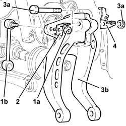
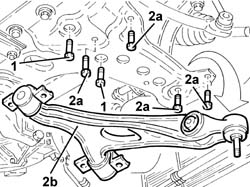
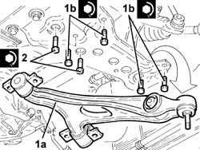
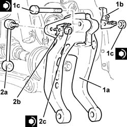

4410B40 lower wishbone (with balljoint) of left or right front suspension (one) - r+r -check wheel geometry separately
- Path
- Procedures > 44 SUSPENSION AND WHEELS > 4410 FRONT SUSPENSION > 4410B front suspension wishbones > 4410B40 lower wishbone (with balljoint) of left or right front suspension (one) - r+r -check wheel geometry separately
- Kind
- repair procedure (removal / refitting; the operation number is the code)
- Applies to
- all engines; all production periods
- Interactive page
- https://sloeber94.github.io/elrnDB-a147/en/#/3025322
Applies to: all engines; all production periods
 Removing
Removing
 Refitting
RefittingPosition the vehicle on the ramp.
Ensure that the ignition key is in the OFF postition, then disconnect the battery negative terminal.
 | Name | Connector |
|---|---|---|
- | Battery |
Proceed with the removal 4450B10 Front WHEEL (one) - R.R. .
Proceed with the removal 7055B64 Engine compartment DUST shield in front wheel arch (one), left or right - R.R. .
Applies to: engines: 2.0 TS, 1.9 JTD 8V; all production periods
Proceed with the removal 7055B54 under-engine guard - r r .
Applies to: engines: 2.0 TS, 1.9 JTD 8V; all production periods
Proceed with the removal 4450C10 front pillar (one), l/h or r/h complete with wheel hub - r+r with wheel removed - check wheel geometry separately .
1. Undo the nuts (1a) and disconnect the front anti-roll bar joint (1b) from the fork.
2. Remove the brake pad wear sensor electric wiring bracket.
3. Undo bolt (3a) and remove the lower fork connecting the front suspension damper to lower wishbone (3b).
4. Remove the wheel rpm sensor electric wiring and brake caliper hose bracket.

Applies to: engines: 2.0 TS, 1.9 JTD 8V; all production periods
1. Undo the bolts securing the antiroll bar to the front suspension (wishbone removal side).
Loosen the bolts fixing the anti-roll bar to the front suspension crossmember (opposite side to wishbone removal side).
2. Remove bolts (2a) and remove front suspension lower wishbone (2b).

Applies to: all engines; all production periods
Refitting
Removing1. Refit the front suspension lower wishbone (1a) in its seating and secure by tightening bolts (1b) to the specified torque.
 | Fastening | Component | Ø | Value (daNm) |
|---|---|---|---|---|
1b | Bolt | FRONT SUSPENSION LOWER LEVER | M10 | (Front suspension crossmember side) 7.1 ÷ 7.9 |
2. Tighten the bolts securing the front anti-roll bar to the front suspension crossmember to the recommended torque.
| Fastening | Component | Ø | Value (daNm) |
|---|---|---|---|---|
2 | Bolt | FRONT ANTI-ROLL BAR | M8 | (Front suspension crossmember side) 3.6 ÷ 4.4 |

Applies to: all engines; all production periods
1. Refit the lower fork connecting the front suspension damper to the lower wishbone (1a) complete with bracket (1b) and secure by tightening bolt (1c) to the specified torque.
| Fastening | Component | Ø | Value (daNm) |
|---|---|---|---|---|
1c | Bolt | FRONT DAMPER FORK ON WISHBONE | M12 | (Shock absorber side) 7.2 ÷ 8.8 |
2. Connect the front anti-roll bar joint (2a) to the fork and secure together with bracket (2b) by tightening the nut (2c) to the recommended torque.
| Fastening | Component | Ø | Value (daNm) |
|---|---|---|---|---|
2c | Nut | FRONT ANTI-ROLL BAR JOINTS | M10 | (Front shock absorber fork side) 4.1 ÷ 5.0 |

Applies to: all engines; all production periods
Proceed with the refitting 4450C10 front pillar (one), l/h or r/h complete with wheel hub - r+r with wheel removed - check wheel geometry separately .
Applies to: engines: 2.0 TS, 1.9 JTD 8V; all production periods
Proceed with the refitting 7055B54 under-engine guard - r r .
Applies to: engines: 2.0 TS, 1.9 JTD 8V; all production periods
Proceed with the refitting 7055B64 Engine compartment DUST shield in front wheel arch (one), left or right - R.R. .
Proceed with the refitting 4450B10 Front WHEEL (one) - R.R. .
Connect the battery terminal (-).
Remove the car from the ramp.
It is advisable to check the wheel alignment 4450A10 front wheel geometry - check using optical equipment - includes front wheel tow-in adjustment if necessary .
Topics linked from this page (6)
- 4450A10 front wheel geometry - check using optical equipment - includes front wheel tow-in adjustment if necessary
- 4450B10 Front WHEEL (one) - R.R.
- 4450C10 front pillar (one), l/h or r/h complete with wheel hub - r+r with wheel removed - check wheel geometry separately
- 7055B54 under-engine guard - r r
- 7055B64 Engine compartment DUST shield in front wheel arch (one), left or right - R.R.
- A1B Battery ( Connectors )